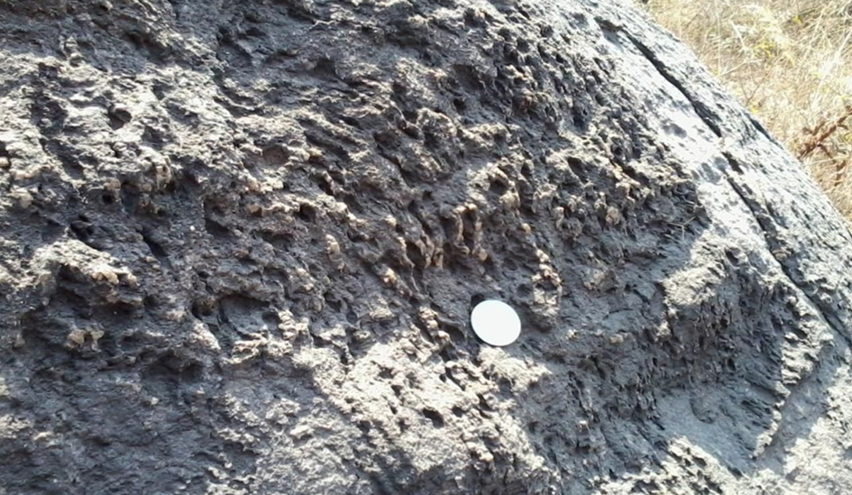
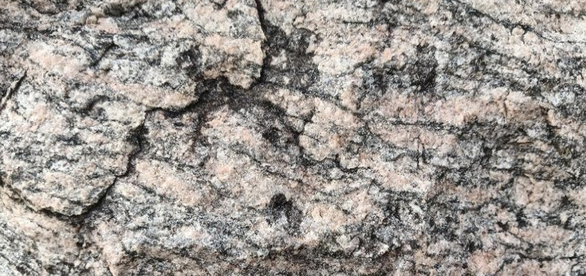
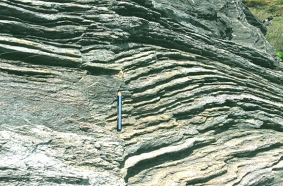
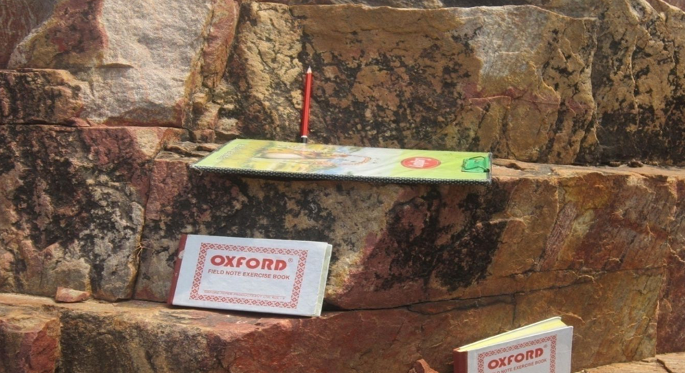
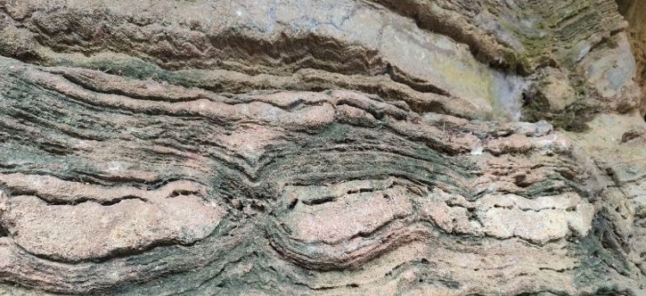

Field Observation Gallery











Geological Field Study – Bikrant Kumar Mishra
This geological field study focuses on the Eastern Ghats Mobile Belt (EGMB) in Odisha, India. The research documents metamorphic rock formations, fold structures, dyke intrusions, gneissic banding and structural geology observed in the regions of Bhabandha, Bhatakumuruda, Baghdevi and Athagadapatana.




